Geometry
This is the equivalent of the Python GDAL/OGR Cookbook's Geomtry page for Fsharp.Gdal.
To show the shape of geometries we use the plot function which is described in the
Plot Geometry appendix.
Configure gdal
Call Configuration.Init() to configure the library
1:
|
Configuration.Init() |> ignore
|
Create a Point
1:
2:
3:
4:
5:
6:
7:
|
let point = new OGR.Geometry(OGR.wkbGeometryType.wkbPoint)
point.AddPoint(1198054.34, 648493.09,0.)
let result, wktPoint = point.ExportToWkt()
printfn "Result = %i" result
printfn "Well Known Text = %s" wktPoint
|
Result = 0
Well Known Text = POINT (1198054.34 648493.09 0)
|
1:
|
let pointPlot = point |> Plot
|
Create a LineString
1:
2:
3:
4:
5:
6:
7:
|
let line = new OGR.Geometry(OGR.wkbGeometryType.wkbLineString)
line.AddPoint(1116651.439379124, 637392.6969887456, 0.)
line.AddPoint(1188804.0108498496, 652655.7409537067, 0.)
line.AddPoint(1226730.3625203592, 634155.0816022386, 0.)
line.AddPoint(1281307.30760719, 636467.6640211721, 0.)
let _,lineStringWkt = line.ExportToWkt()
|
"LINESTRING (1116651.439379124 637392.69698874559 0,1188804.0108498496 652655.74095370667 0,1226730.3625203592 634155.08160223858 0,1281307.30760719 636467.6640211721 0)"
|
1:
|
let linePlot = line |> Plot
|
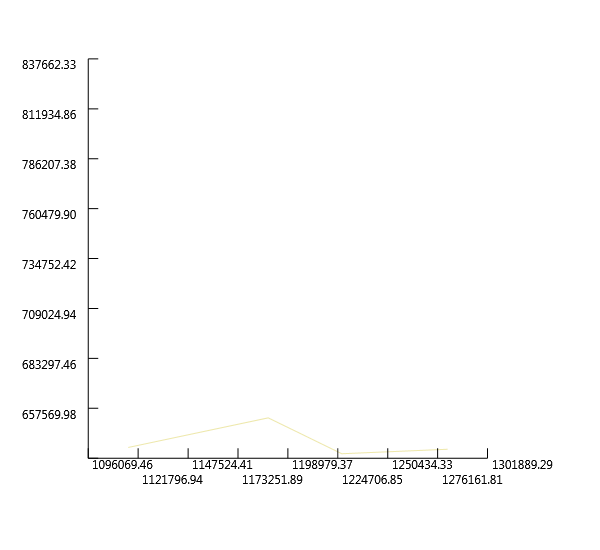
Create a Polygon
1:
2:
3:
4:
5:
6:
7:
8:
9:
10:
11:
12:
13:
14:
|
// Create ring
let ring = new OGR.Geometry(OGR.wkbGeometryType.wkbLinearRing)
ring.AddPoint(1179091.1646903288, 712782.8838459781, 0.)
ring.AddPoint(1161053.0218226474, 667456.2684348812, 0.)
ring.AddPoint(1214704.933941905, 641092.8288590391, 0.)
ring.AddPoint(1228580.428455506, 682719.3123998424, 0.)
ring.AddPoint(1218405.0658121984, 721108.1805541387, 0.)
ring.AddPoint(1179091.1646903288, 712782.8838459781, 0.)
// Create Polygon
let poly = new OGR.Geometry(OGR.wkbGeometryType.wkbPolygon)
poly.AddGeometry(ring)
let _,polyStringWkt = poly.ExportToWkt()
|
"POLYGON ((1179091.1646903288 712782.88384597807 0,1161053.0218226474 667456.26843488123 0,1214704.9339419049 641092.82885903912 0,1228580.428455506 682719.31239984243 0,1218405.0658121984 721108.18055413873 0,1179091.1646903288 712782.88384597807 0))"
|
1:
|
let polyPlot = poly |> Plot
|
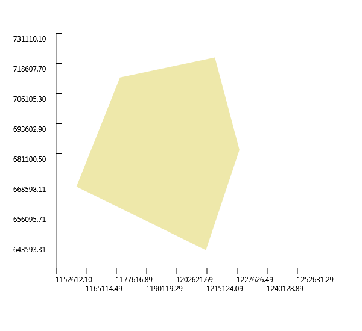
Create Polygon with holes
1:
2:
3:
4:
5:
6:
7:
8:
9:
10:
11:
12:
13:
14:
15:
16:
17:
18:
19:
20:
21:
22:
23:
|
// Create outer ring
let outRing = new OGR.Geometry(OGR.wkbGeometryType.wkbLinearRing)
outRing.AddPoint(1154115.274565847, 686419.4442701361, 0.)
outRing.AddPoint(1154115.274565847, 653118.2574374934, 0.)
outRing.AddPoint(1165678.1866605144, 653118.2574374934, 0.)
outRing.AddPoint(1165678.1866605144, 686419.4442701361, 0.)
outRing.AddPoint(1154115.274565847, 686419.4442701361, 0.)
// Create inner ring
let innerRing = new OGR.Geometry(OGR.wkbGeometryType.wkbLinearRing)
innerRing.AddPoint(1149490.1097279799, 691044.6091080031, 0.)
innerRing.AddPoint(1149490.1097279799, 648030.5761158396, 0.)
innerRing.AddPoint(1191579.1097525698, 648030.5761158396, 0.)
innerRing.AddPoint(1191579.1097525698, 691044.6091080031, 0.)
innerRing.AddPoint(1149490.1097279799, 691044.6091080031, 0.)
// Create polygon
let polyWithHoles = new OGR.Geometry(OGR.wkbGeometryType.wkbPolygon)
polyWithHoles.AddGeometry(innerRing)
polyWithHoles.AddGeometry(outRing)
let _,polyWithHolesWkt = polyWithHoles.ExportToWkt()
|
"POLYGON ((1149490.1097279799 691044.60910800309 0,1149490.1097279799 648030.57611583965 0,1191579.1097525698 648030.57611583965 0,1191579.1097525698 691044.60910800309 0,1149490.1097279799 691044.60910800309 0),(1154115.2745658469 686419.44427013607 0,1154115.2745658469 653118.25743749342 0,1165678.1866605144 653118.25743749342 0,1165678.1866605144 686419.44427013607 0,1154115.2745658469 686419.44427013607 0))"
|
1:
|
let polyWithHolesPlot = polyWithHoles |> Plot
|
Create a MultiPoint
1:
2:
3:
4:
5:
6:
7:
8:
9:
10:
11:
12:
13:
14:
15:
|
let multipoint = new OGR.Geometry(OGR.wkbGeometryType.wkbMultiPoint)
let point1 = new OGR.Geometry(OGR.wkbGeometryType.wkbPoint)
point1.AddPoint(1251243.7361610543, 598078.7958668759, 0.)
multipoint.AddGeometry(point1)
let point2 = new OGR.Geometry(OGR.wkbGeometryType.wkbPoint)
point2.AddPoint(1240605.8570339603, 601778.9277371694, 0.)
multipoint.AddGeometry(point2)
let point3 = new OGR.Geometry(OGR.wkbGeometryType.wkbPoint)
point3.AddPoint(1250318.7031934808, 606404.0925750365, 0.)
multipoint.AddGeometry(point3)
let _,multipointWkt = multipoint.ExportToWkt()
|
"MULTIPOINT (1251243.7361610543 598078.79586687591 0,1240605.8570339603 601778.92773716943 0,1250318.7031934808 606404.09257503645 0)"
|
1:
|
let multipointPlot = multipoint |> Plot
|

Create a MultiLineString
1:
2:
3:
4:
5:
6:
7:
8:
9:
10:
11:
12:
13:
|
let multiline = new OGR.Geometry(OGR.wkbGeometryType.wkbMultiLineString)
let line1 = new OGR.Geometry(OGR.wkbGeometryType.wkbLineString)
line1.AddPoint(1214242.4174581182, 617041.9717021306, 0.)
line1.AddPoint(1234593.142744733, 629529.9167643716, 0.)
multiline.AddGeometry(line1)
let line2 = new OGR.Geometry(OGR.wkbGeometryType.wkbLineString)
line2.AddPoint(1184641.3624957693, 626754.8178616514, 0.)
line2.AddPoint(1219792.6152635587, 606866.6090588232, 0.)
multiline.AddGeometry(line2)
let _,multilineWkt = multiline.ExportToWkt()
|
"MULTILINESTRING ((1214242.4174581182 617041.97170213063 0,1234593.142744733 629529.91676437156 0),(1184641.3624957693 626754.81786165142 0,1219792.6152635587 606866.6090588232 0))"
|
1:
|
let multilinePlot = multiline |> Plot
|
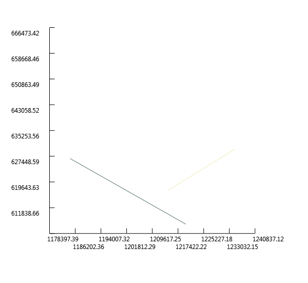
Create a MultiPloygon
1:
2:
3:
4:
5:
6:
7:
8:
9:
10:
11:
12:
13:
14:
15:
16:
17:
18:
19:
20:
21:
22:
23:
24:
25:
26:
27:
28:
29:
|
let multipolygon = new OGR.Geometry(OGR.wkbGeometryType.wkbMultiPolygon)
// Create ring #1
let ring1 = new OGR.Geometry(OGR.wkbGeometryType.wkbLinearRing)
ring1.AddPoint(1204067.0548148106, 634617.5980860253, 0.)
ring1.AddPoint(1204067.0548148106, 620742.1035724243, 0.)
ring1.AddPoint(1215167.4504256917, 620742.1035724243, 0.)
ring1.AddPoint(1215167.4504256917, 634617.5980860253, 0.)
ring1.AddPoint(1204067.0548148106, 634617.5980860253, 0.)
// Create polygon #1
let poly1 = new OGR.Geometry(OGR.wkbGeometryType.wkbPolygon)
poly1.AddGeometry(ring1)
multipolygon.AddGeometry(poly1)
// Create ring #2
let ring2 = new OGR.Geometry(OGR.wkbGeometryType.wkbLinearRing)
ring2.AddPoint(1179553.6811741155, 647105.5431482664, 0.)
ring2.AddPoint(1179553.6811741155, 626292.3013778647, 0.)
ring2.AddPoint(1194354.20865529, 626292.3013778647, 0.)
ring2.AddPoint(1194354.20865529, 647105.5431482664, 0.)
ring2.AddPoint(1179553.6811741155, 647105.5431482664, 0.)
// Create polygon #1
let poly2 = new OGR.Geometry(OGR.wkbGeometryType.wkbPolygon)
poly2.AddGeometry(ring2)
multipolygon.AddGeometry(poly2)
let _,multipolygonWkt = multipolygon.ExportToWkt()
|
"MULTIPOLYGON (((1204067.0548148106 634617.59808602533 0,1204067.0548148106 620742.10357242427 0,1215167.4504256917 620742.10357242427 0,1215167.4504256917 634617.59808602533 0,1204067.0548148106 634617.59808602533 0)),((1179553.6811741155 647105.54314826638 0,1179553.6811741155 626292.30137786467 0,1194354.2086552901 626292.30137786467 0,1194354.2086552901 647105.54314826638 0,1179553.6811741155 647105.54314826638 0)))"
|
1:
|
let multipolygonPlot = multipolygon |> Plot
|
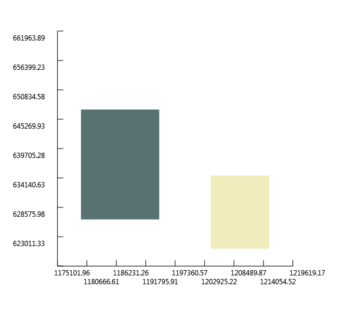
Create a GeometryCollection
1:
2:
3:
4:
5:
6:
7:
8:
9:
10:
11:
12:
13:
14:
|
let geomcol = new OGR.Geometry(OGR.wkbGeometryType.wkbGeometryCollection)
// Add a point
let point4 = new OGR.Geometry(OGR.wkbGeometryType.wkbPoint)
point.AddPoint(-122.23, 47.09, 0.)
geomcol.AddGeometry(point)
// Add a line
let line3 = new OGR.Geometry(OGR.wkbGeometryType.wkbLineString)
line3.AddPoint(-122.60, 47.14, 0.)
line3.AddPoint(-122.48, 47.23, 0.)
geomcol.AddGeometry(line3)
let _,geomcolWkt = geomcol.ExportToWkt()
|
"GEOMETRYCOLLECTION (POINT (-122.23 47.09 0),LINESTRING (-122.6 47.14 0,-122.48 47.23 0))"
|
1:
|
let geomcolPlot = geomcol |> Plot
|
Create Geometry from WKT
1:
2:
3:
4:
|
let wkt = ref "POINT (1120351.5712494177 741921.4223245403)"
let point5 = OGR.Ogr.CreateGeometryFromWkt(wkt, null)
printfn "%f,%f" (point5.GetX(0)) (point5.GetY(0))
|
1120351.571249,741921.422325
|
1:
|
let point5Plot = point5 |> Plot
|
Create Geometry from GeoJSON
1:
2:
3:
4:
|
let geojson = """{"type":"Point","coordinates":[108420.33,753808.59]}"""
let point6 = OGR.Ogr.CreateGeometryFromJson(geojson)
printfn "%f,%f" (point6.GetX(0)) (point6.GetY(0))
|
108420.330000,753808.590000
|
1:
|
let point6Plot = point6 |> Plot
|
Create Geometry from GML
1:
2:
3:
4:
|
let gml = """<gml:Point xmlns:gml="http://www.opengis.net/gml"><gml:coordinates>108420.33,753808.59</gml:coordinates></gml:Point>"""
let point7 = OGR.Ogr.CreateGeometryFromGML(gml)
printfn "%f,%f" (point7.GetX(0)) (point7.GetY(0))
|
108420.330000,753808.590000
|
1:
|
let point7Plot = point7 |> Plot
|
Create Geometry from WKB
Count Points in a Geometry
1:
2:
3:
4:
|
let wkt2 = ref "LINESTRING (1181866.263593049 615654.4222507705, 1205917.1207499576 623979.7189589312, 1227192.8790041457 643405.4112779726, 1224880.2965852122 665143.6860159477)"
let line4 = OGR.Ogr.CreateGeometryFromWkt(wkt2, null)
printfn "Geometry has %i points" (line4.GetPointCount())
|
Count Geometries in a Geometry
1:
2:
3:
4:
|
let wkt3 = ref "MULTIPOINT (1181866.263593049 615654.4222507705, 1205917.1207499576 623979.7189589312, 1227192.8790041457 643405.4112779726, 1224880.2965852122 665143.6860159477)"
let geom = OGR.Ogr.CreateGeometryFromWkt(wkt3, null)
printfn "Geometry has %i geometries" (geom.GetGeometryCount())
|
Geometry has 4 geometries
|
Iterate over Geometries in a Geometry
1:
2:
3:
4:
|
for i in 0..(geom.GetGeometryCount() - 1) do
let g = geom.GetGeometryRef(i)
let _,wkt = g.ExportToWkt()
printfn "%i) %s" i wkt
|
0) POINT (1181866.263593049 615654.4222507705)
1) POINT (1205917.1207499576 623979.71895893116)
2) POINT (1227192.8790041457 643405.41127797263)
3) POINT (1224880.2965852122 665143.68601594772)
|
Iterate over Points in a Geometry
1:
2:
3:
4:
|
for i in 0..(line4.GetPointCount() - 1) do
let pt = [|0.; 0.|]
line4.GetPoint(i, pt)
printfn "%i) POINT (%f %f)" i pt.[0] pt.[1]
|
0) POINT (1181866.263593 615654.422251)
1) POINT (1205917.120750 623979.718959)
2) POINT (1227192.879004 643405.411278)
3) POINT (1224880.296585 665143.686016)
|
Buffer a Geometry
Buffer creates a polygon around a geometry at a speicified distance:
1:
2:
3:
4:
5:
6:
7:
8:
|
let bufferDistance = 1000.
let lineBuffer = line4.Buffer(bufferDistance, 1)
let lineAndBuffer = new OGR.Geometry(OGR.wkbGeometryType.wkbGeometryCollection)
lineAndBuffer.AddGeometry(lineBuffer)
lineAndBuffer.AddGeometry(line4)
let lineAndBufferPlot = lineAndBuffer |> Plot
|
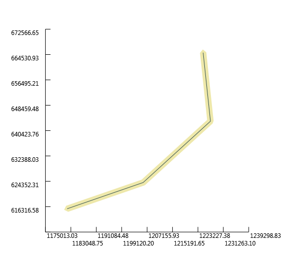
Calculate Envelope of a Geometry
The Envelope is the minimal rectangular area enclosing the geometry
1:
2:
3:
4:
|
let env = new OGR.Envelope()
line4.GetEnvelope(env)
printfn "MinX: %f, MinY: %f, MaxX: %f, MaxY: %f" env.MinX env.MinY env.MaxX env.MaxY
|
MinX: 1181866.263593, MinY: 615654.422251, MaxX: 1227192.879004, MaxY: 665143.686016
|
(In the plot-geometry script I've already defined an utility function toEnv to obtain the
envelope of a geometry more easily.)
Calculate the Area of a Geometry
1:
2:
3:
4:
|
let wkt4 = ref "POLYGON ((1162440.5712740074 672081.4332727483, 1162440.5712740074 647105.5431482664, 1195279.2416228633 647105.5431482664, 1195279.2416228633 672081.4332727483, 1162440.5712740074 672081.4332727483))"
let poly3 = OGR.Ogr.CreateGeometryFromWkt(wkt4, null)
printfn "Area = %f" (poly3.GetArea())
|
Calculate the Length of a Geometry
1:
2:
3:
4:
|
let wkt5 = ref "LINESTRING (1181866.263593049 615654.4222507705, 1205917.1207499576 623979.7189589312, 1227192.8790041457 643405.4112779726, 1224880.2965852122 665143.6860159477)"
let geom2 = OGR.Ogr.CreateGeometryFromWkt(wkt5, null)
printfn "Length = %f" (geom2.Length())
|
Get the geometry type (as a string) from a Geometry
1:
2:
3:
4:
5:
6:
7:
8:
9:
10:
|
let wkts =
[
ref "POINT (1198054.34 648493.09)"
ref "LINESTRING (1181866.263593049 615654.4222507705, 1205917.1207499576 623979.7189589312, 1227192.8790041457 643405.4112779726, 1224880.2965852122 665143.6860159477)"
ref "POLYGON ((1162440.5712740074 672081.4332727483, 1162440.5712740074 647105.5431482664, 1195279.2416228633 647105.5431482664, 1195279.2416228633 672081.4332727483, 1162440.5712740074 672081.4332727483))"
]
for wkt in wkts do
let geom = OGR.Ogr.CreateGeometryFromWkt(wkt, null)
printfn "%s" (geom.GetGeometryName())
|
Calculate intersection between two Geometries
1:
2:
3:
4:
5:
6:
7:
8:
9:
|
let wkt7 = ref "POLYGON ((1208064.271243039 624154.6783778917, 1208064.271243039 601260.9785661874, 1231345.9998651114 601260.9785661874, 1231345.9998651114 624154.6783778917, 1208064.271243039 624154.6783778917))"
let wkt6 = ref "POLYGON ((1199915.6662253144 633079.3410163528, 1199915.6662253144 614453.958118695, 1219317.1067437078 614453.958118695, 1219317.1067437078 633079.3410163528, 1199915.6662253144 633079.3410163528)))"
let poly4 = OGR.Ogr.CreateGeometryFromWkt(wkt7, null)
let poly5 = OGR.Ogr.CreateGeometryFromWkt(wkt6, null)
let intersection = poly4.Intersection(poly5)
let _, intersectionStr = intersection.ExportToWkt()
|
1:
|
printfn "%s" intersectionStr
|
POLYGON ((1208064.2712430391 614453.95811869495,1208064.2712430391 624154.67837789166,1219317.1067437078 624154.67837789166,1219317.1067437078 614453.95811869495,1208064.2712430391 614453.95811869495))
|
To graphically visualize the intersection we can add all the three geometries
in a geometry collection and then plot it:
1:
2:
3:
4:
5:
6:
|
let geomcol2 = new OGR.Geometry(OGR.wkbGeometryType.wkbGeometryCollection)
geomcol2.AddGeometry(poly4)
geomcol2.AddGeometry(poly5)
geomcol2.AddGeometry(intersection)
let geomcol2Plot = geomcol2 |> Plot
|
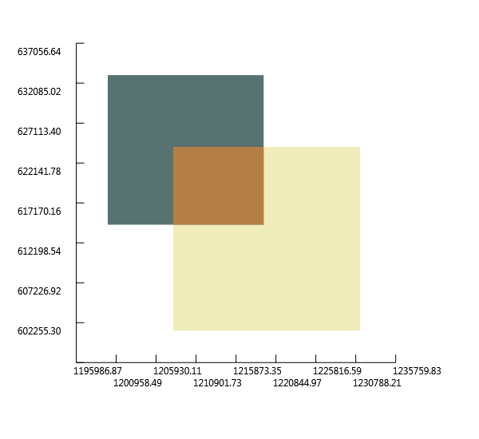
Calculate union between two Geometries
1:
2:
3:
4:
5:
6:
7:
8:
9:
10:
11:
|
let wkt8 = ref "POLYGON ((1208064.271243039 624154.6783778917, 1208064.271243039 601260.9785661874, 1231345.9998651114 601260.9785661874, 1231345.9998651114 624154.6783778917, 1208064.271243039 624154.6783778917))"
let wkt9 = ref "POLYGON ((1199915.6662253144 633079.3410163528, 1199915.6662253144 614453.958118695, 1219317.1067437078 614453.958118695, 1219317.1067437078 633079.3410163528, 1199915.6662253144 633079.3410163528)))"
let poly6 = OGR.Ogr.CreateGeometryFromWkt(wkt8, null)
let poly7 = OGR.Ogr.CreateGeometryFromWkt(wkt9, null)
let geomcol3 = new OGR.Geometry(OGR.wkbGeometryType.wkbGeometryCollection)
geomcol3.AddGeometry(poly6)
geomcol3.AddGeometry(poly7)
let geomcol3Plot = geomcol3 |> Plot
|
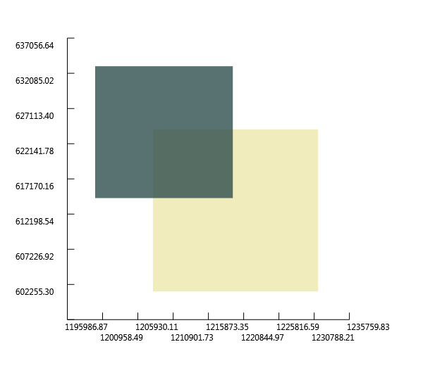
1:
2:
3:
|
let union = poly6.Union(poly7)
let unionPlot = union |> Plot
|
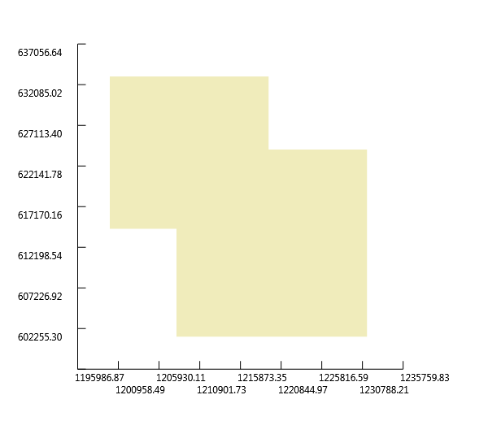
Write Geometry to GeoJSON
Following the Python GDAL/OGR Cookbook we will inspect two options
to create a GeoJSON from a geometry.
First option: create a new GeoJSON file:
we start from a test polygon:
1:
2:
3:
4:
5:
6:
7:
|
let ring3 = new OGR.Geometry(OGR.wkbGeometryType.wkbLinearRing)
ring3.AddPoint(1000., 1000., 0.)
ring3.AddPoint(3000., 1000., 0.)
ring3.AddPoint(2000., 2000., 0.)
ring3.AddPoint(1000., 1000., 0.)
let poly8 = new OGR.Geometry(OGR.wkbGeometryType.wkbPolygon)
poly8.AddGeometry(ring3)
|
intialize the righ output Driver
1:
|
let outDriver = OGR.Ogr.GetDriverByName("GeoJSON")
|
with it we create the new json file, but first we need to be sure that
the file is not yet there because the driver can't override it
1:
2:
3:
4:
5:
6:
7:
8:
9:
10:
11:
12:
13:
14:
15:
16:
17:
18:
19:
20:
21:
22:
23:
24:
25:
|
let jsonFileName = __SOURCE_DIRECTORY__ + "\\test.geojson"
if System.IO.File.Exists(jsonFileName) then
System.IO.File.Delete(jsonFileName)
let outDataSource = outDriver.CreateDataSource(jsonFileName, [||])
let outLayer = outDataSource.CreateLayer(jsonFileName, null, OGR.wkbGeometryType.wkbPolygon, [||])
// Get the output Layer's Feature Definition
let featureDefn = outLayer.GetLayerDefn()
// create a new feature
let outFeature = new OGR.Feature(featureDefn)
// Set new geometry
outFeature.SetGeometry(poly8)
// Add new feature to output Layer
outLayer.CreateFeature(outFeature)
// destroy the feature
outFeature.Dispose()
// Close DataSources
outDataSource.Dispose()
|
Taking advantage of the OgrTypeProvider we can inspect what is inside our
newly created json file:
1:
|
let newJson = new OgrTypeProvider<"G:/GitHub/Fsharp.Gdal/Journal/test.geojson">()
|
1:
2:
|
for feat in newJson.Features do
printfn "Geometry type: %A" (feat.Geometry.GetGeometryType())
|
Geometry type: wkbPolygon25D
|
... ok a wkbPolygon25D so let's plot it:
1:
2:
3:
4:
5:
6:
|
let mutable jsonPoly = new OGR.Geometry(OGR.wkbGeometryType.wkbPolygon25D)
for feat in newJson.Features do
jsonPoly <- feat.Geometry
let jsonPolyPlot = jsonPoly |> Plot
|
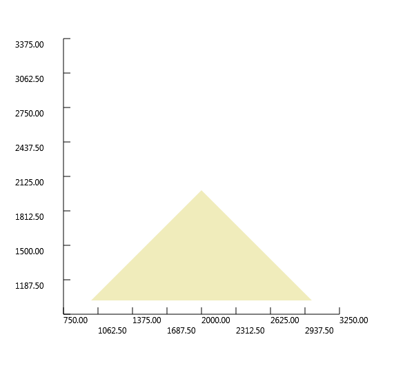
Second option: simply export the geometry to Json and print it
1:
2:
|
let geojson2 = poly8.ExportToJson([||])
printfn "%s" geojson2
|
{ "type": "Polygon", "coordinates": [ [ [ 1000.0, 1000.0, 0.0 ], [ 3000.0, 1000.0, 0.0 ], [ 2000.0, 2000.0, 0.0 ], [ 1000.0, 1000.0, 0.0 ] ] ] }
|
Write Geometry to WKT
TODO: not really interesting
Write Geometry to KML
TODO: not really interesting
Write Geometry to WKB
TODO: not really interesting
Force polygon to multipolygon
TODO: not really interesting
Quarter polygon and create centroids
Given a test polygon
1:
2:
3:
4:
|
let polyWkt = ref "POLYGON((-107.42631019589980212 40.11971708125970082,-107.42455436683293613 40.12061219666851741,-107.42020981542387403 40.12004414402532859,-107.41789122063043749 40.12149008687303819,-107.41419947746419439 40.11811617239460048,-107.41915181585792993 40.11761695654455906,-107.41998470913324581 40.11894245264452508,-107.42203317637793702 40.1184088144647788,-107.42430674991324224 40.1174448122981957,-107.42430674991324224 40.1174448122981957,-107.42631019589980212 40.11971708125970082))"
let geomPoly = OGR.Ogr.CreateGeometryFromWkt(polyWkt, null)
let geomPolyPlot = geomPoly |> Plot
|
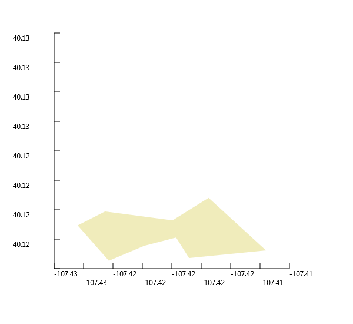
Create 4 square polygons
1:
2:
3:
4:
5:
|
let env2 = geomPoly |> toEnv
let minX = env2.MinX
let minY = env2.MinY
let maxX = env2.MaxX
let maxY = env2.MaxY
|
coord0----coord1----coord2
| | |
coord3----coord4----coord5
| | |
coord6----coord7----coord8
1:
2:
3:
4:
5:
6:
7:
8:
9:
10:
11:
12:
13:
14:
15:
16:
17:
18:
19:
20:
21:
22:
23:
24:
25:
26:
27:
28:
29:
30:
31:
32:
33:
34:
35:
36:
37:
38:
39:
40:
41:
42:
43:
44:
45:
46:
47:
48:
49:
50:
51:
52:
53:
54:
|
let coord0 = minX, maxY
let coord1 = minX+(maxX-minX)/2., maxY
let coord2 = maxX, maxY
let coord3 = minX, minY+(maxY-minY)/2.
let coord4 = minX+(maxX-minX)/2., minY+(maxY-minY)/2.
let coord5 = maxX, minY+(maxY-minY)/2.
let coord6 = minX, minY
let coord7 = minX+(maxX-minX)/2., minY
let coord8 = maxX, minY
let ringTopLeft = new OGR.Geometry(OGR.wkbGeometryType.wkbLinearRing)
ringTopLeft.AddPoint_2D(coord0)
ringTopLeft.AddPoint_2D(coord1)
ringTopLeft.AddPoint_2D(coord4)
ringTopLeft.AddPoint_2D(coord3)
ringTopLeft.AddPoint_2D(coord0)
let polyTopLeft = new OGR.Geometry(OGR.wkbGeometryType.wkbPolygon)
polyTopLeft.AddGeometry(ringTopLeft)
let ringTopRight = new OGR.Geometry(OGR.wkbGeometryType.wkbLinearRing)
ringTopRight.AddPoint_2D(coord1)
ringTopRight.AddPoint_2D(coord2)
ringTopRight.AddPoint_2D(coord5)
ringTopRight.AddPoint_2D(coord4)
ringTopRight.AddPoint_2D(coord1)
let polyTopRight = new OGR.Geometry(OGR.wkbGeometryType.wkbPolygon)
polyTopRight.AddGeometry(ringTopRight)
let ringBottomLeft = new OGR.Geometry(OGR.wkbGeometryType.wkbLinearRing)
ringBottomLeft.AddPoint_2D(coord3)
ringBottomLeft.AddPoint_2D(coord4)
ringBottomLeft.AddPoint_2D(coord7)
ringBottomLeft.AddPoint_2D(coord6)
ringBottomLeft.AddPoint_2D(coord3)
let polyBottomLeft = new OGR.Geometry(OGR.wkbGeometryType.wkbPolygon)
polyBottomLeft.AddGeometry(ringBottomLeft)
let ringBottomRight = new OGR.Geometry(OGR.wkbGeometryType.wkbLinearRing)
ringBottomRight.AddPoint_2D(coord4)
ringBottomRight.AddPoint_2D(coord5)
ringBottomRight.AddPoint_2D(coord8)
ringBottomRight.AddPoint_2D(coord7)
ringBottomRight.AddPoint_2D(coord4)
let polyBottomRight = new OGR.Geometry(OGR.wkbGeometryType.wkbPolygon)
polyBottomRight.AddGeometry(ringBottomRight)
let quartersCol = new OGR.Geometry(OGR.wkbGeometryType.wkbGeometryCollection)
quartersCol.AddGeometry(polyTopLeft)
quartersCol.AddGeometry(polyTopRight)
quartersCol.AddGeometry(polyBottomLeft)
quartersCol.AddGeometry(polyBottomRight)
quartersCol.AddGeometry(geomPoly)
let quartersColPlot = quartersCol |> Plot
|
Intersect 4 squares polygons with test polygon
1:
2:
3:
4:
|
let quaterPolyTopLeft = polyTopLeft.Intersection(geomPoly)
let quaterPolyTopRight = polyTopRight.Intersection(geomPoly)
let quaterPolyBottomLeft = polyBottomLeft.Intersection(geomPoly)
let quaterPolyBottomRight = polyBottomRight.Intersection(geomPoly)
|
Create centroids of each intersected polygon
1:
2:
3:
4:
5:
6:
7:
8:
9:
10:
11:
12:
13:
14:
15:
16:
17:
|
let centroidTopLeft = quaterPolyTopLeft.Centroid()
let centroidTopRight = quaterPolyTopRight.Centroid()
let centroidBottomLeft = quaterPolyBottomLeft.Centroid()
let centroidBottomRight = quaterPolyBottomRight.Centroid()
let quartersWithCentroidsCol = new OGR.Geometry(OGR.wkbGeometryType.wkbGeometryCollection)
quartersWithCentroidsCol.AddGeometry(polyTopLeft)
quartersWithCentroidsCol.AddGeometry(polyTopRight)
quartersWithCentroidsCol.AddGeometry(polyBottomLeft)
quartersWithCentroidsCol.AddGeometry(polyBottomRight)
quartersWithCentroidsCol.AddGeometry(geomPoly)
quartersWithCentroidsCol.AddGeometry(centroidTopLeft)
quartersWithCentroidsCol.AddGeometry(centroidTopRight)
quartersWithCentroidsCol.AddGeometry(centroidBottomLeft)
quartersWithCentroidsCol.AddGeometry(centroidBottomRight)
let quartersWithCentroidsColPlot = quartersWithCentroidsCol |> Plot
|
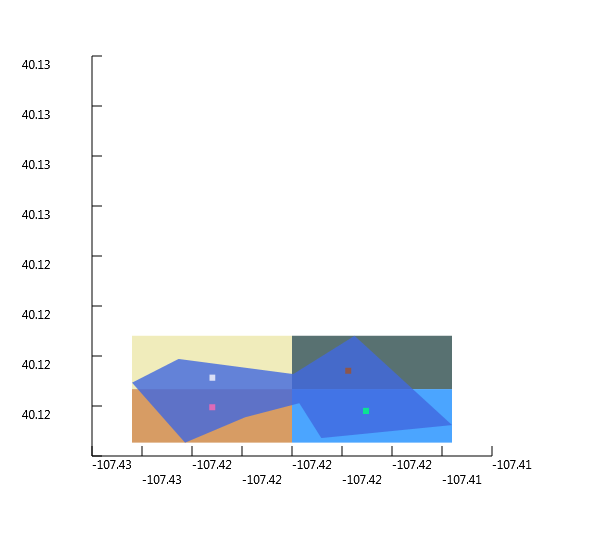
Multiple items
namespace FSharp
--------------------
namespace Microsoft.FSharp
namespace FSharp.Gdal
module Configuration
from FSharp.Gdal
val Init : unit -> unit
Full name: FSharp.Gdal.Configuration.Init
val ignore : value:'T -> unit
Full name: Microsoft.FSharp.Core.Operators.ignore
namespace OSGeo
val point : OGR.Geometry
Full name: Geometry.point
namespace OSGeo.OGR
Multiple items
type Geometry =
new : type:wkbGeometryType -> Geometry + 2 overloads
member AddGeometry : other:Geometry -> int
member AddGeometryDirectly : other_disown:Geometry -> int
member AddPoint : x:float * y:float * z:float -> unit
member AddPoint_2D : x:float * y:float -> unit
member Area : unit -> float
member AssignSpatialReference : reference:SpatialReference -> unit
member Boundary : unit -> Geometry
member Buffer : distance:float * quadsecs:int -> Geometry
member Centroid : unit -> Geometry
...
Full name: OSGeo.OGR.Geometry
--------------------
OGR.Geometry(type: OGR.wkbGeometryType) : unit
OGR.Geometry(cPtr: nativeint, cMemoryOwn: bool, parent: obj) : unit
OGR.Geometry(type: OGR.wkbGeometryType, wkt: string, wkb: int, wkb_buf: nativeint, gml: string) : unit
type wkbGeometryType =
| wkbUnknown = 0
| wkbPoint = 1
| wkbLineString = 2
| wkbPolygon = 3
| wkbMultiPoint = 4
| wkbMultiLineString = 5
| wkbMultiPolygon = 6
| wkbGeometryCollection = 7
| wkbNone = 100
| wkbLinearRing = 101
...
Full name: OSGeo.OGR.wkbGeometryType
field OGR.wkbGeometryType.wkbPoint = 1
OGR.Geometry.AddPoint(x: float, y: float, z: float) : unit
val result : int
Full name: Geometry.result
val wktPoint : string
Full name: Geometry.wktPoint
OGR.Geometry.ExportToWkt(argout: byref<string>) : int
val printfn : format:Printf.TextWriterFormat<'T> -> 'T
Full name: Microsoft.FSharp.Core.ExtraTopLevelOperators.printfn
val pointPlot : Plot
Full name: Geometry.pointPlot
Multiple items
type Plot =
new : geom:Geometry -> Plot
member SaveAsBitmap : fileName:string -> unit
Full name: Plot-geometry.Plot
Plots an OGR.Geometry on a Xaml Window
--------------------
new : geom:OGR.Geometry -> Plot
member Plot.SaveAsBitmap : fileName:string -> unit
val line : OGR.Geometry
Full name: Geometry.line
field OGR.wkbGeometryType.wkbLineString = 2
val lineStringWkt : string
Full name: Geometry.lineStringWkt
val linePlot : Plot
Full name: Geometry.linePlot
val ring : OGR.Geometry
Full name: Geometry.ring
field OGR.wkbGeometryType.wkbLinearRing = 101
val poly : OGR.Geometry
Full name: Geometry.poly
field OGR.wkbGeometryType.wkbPolygon = 3
OGR.Geometry.AddGeometry(other: OGR.Geometry) : int
val polyStringWkt : string
Full name: Geometry.polyStringWkt
val polyPlot : Plot
Full name: Geometry.polyPlot
val outRing : OGR.Geometry
Full name: Geometry.outRing
val innerRing : OGR.Geometry
Full name: Geometry.innerRing
val polyWithHoles : OGR.Geometry
Full name: Geometry.polyWithHoles
val polyWithHolesWkt : string
Full name: Geometry.polyWithHolesWkt
val polyWithHolesPlot : Plot
Full name: Geometry.polyWithHolesPlot
val multipoint : OGR.Geometry
Full name: Geometry.multipoint
field OGR.wkbGeometryType.wkbMultiPoint = 4
val point1 : OGR.Geometry
Full name: Geometry.point1
val point2 : OGR.Geometry
Full name: Geometry.point2
val point3 : OGR.Geometry
Full name: Geometry.point3
val multipointWkt : string
Full name: Geometry.multipointWkt
val multipointPlot : Plot
Full name: Geometry.multipointPlot
val multiline : OGR.Geometry
Full name: Geometry.multiline
field OGR.wkbGeometryType.wkbMultiLineString = 5
val line1 : OGR.Geometry
Full name: Geometry.line1
val line2 : OGR.Geometry
Full name: Geometry.line2
val multilineWkt : string
Full name: Geometry.multilineWkt
val multilinePlot : Plot
Full name: Geometry.multilinePlot
val multipolygon : OGR.Geometry
Full name: Geometry.multipolygon
field OGR.wkbGeometryType.wkbMultiPolygon = 6
val ring1 : OGR.Geometry
Full name: Geometry.ring1
val poly1 : OGR.Geometry
Full name: Geometry.poly1
val ring2 : OGR.Geometry
Full name: Geometry.ring2
val poly2 : OGR.Geometry
Full name: Geometry.poly2
val multipolygonWkt : string
Full name: Geometry.multipolygonWkt
val multipolygonPlot : Plot
Full name: Geometry.multipolygonPlot
val geomcol : OGR.Geometry
Full name: Geometry.geomcol
field OGR.wkbGeometryType.wkbGeometryCollection = 7
val point4 : OGR.Geometry
Full name: Geometry.point4
val line3 : OGR.Geometry
Full name: Geometry.line3
val geomcolWkt : string
Full name: Geometry.geomcolWkt
val geomcolPlot : Plot
Full name: Geometry.geomcolPlot
val wkt : string ref
Full name: Geometry.wkt
Multiple items
val ref : value:'T -> 'T ref
Full name: Microsoft.FSharp.Core.Operators.ref
--------------------
type 'T ref = Ref<'T>
Full name: Microsoft.FSharp.Core.ref<_>
val point5 : OGR.Geometry
Full name: Geometry.point5
Multiple items
type Ogr =
new : unit -> Ogr
static val wkb25DBit : int
static val ogrZMarker : int
static val OGRNullFID : int
static val OGRUnsetMarker : int
static val OLCRandomRead : string
static val OLCSequentialWrite : string
static val OLCRandomWrite : string
static val OLCFastSpatialFilter : string
static val OLCFastFeatureCount : string
...
nested type GDALErrorHandlerDelegate
nested type GDALProgressFuncDelegate
Full name: OSGeo.OGR.Ogr
--------------------
OGR.Ogr() : unit
OGR.Ogr.CreateGeometryFromWkt(val: byref<string>, reference: OSR.SpatialReference) : OGR.Geometry
OGR.Geometry.GetX(point: int) : float
OGR.Geometry.GetY(point: int) : float
val point5Plot : Plot
Full name: Geometry.point5Plot
val geojson : string
Full name: Geometry.geojson
val point6 : OGR.Geometry
Full name: Geometry.point6
OGR.Ogr.CreateGeometryFromJson(input_string: string) : OGR.Geometry
val point6Plot : Plot
Full name: Geometry.point6Plot
val gml : string
Full name: Geometry.gml
val point7 : OGR.Geometry
Full name: Geometry.point7
OGR.Ogr.CreateGeometryFromGML(input_string: string) : OGR.Geometry
val point7Plot : Plot
Full name: Geometry.point7Plot
val wkt2 : string ref
Full name: Geometry.wkt2
val line4 : OGR.Geometry
Full name: Geometry.line4
OGR.Geometry.GetPointCount() : int
val wkt3 : string ref
Full name: Geometry.wkt3
val geom : OGR.Geometry
Full name: Geometry.geom
OGR.Geometry.GetGeometryCount() : int
val i : int32
val g : OGR.Geometry
OGR.Geometry.GetGeometryRef(geom: int) : OGR.Geometry
val wkt : string
val pt : float []
OGR.Geometry.GetPoint(iPoint: int, argout: float []) : unit
val bufferDistance : float
Full name: Geometry.bufferDistance
val lineBuffer : OGR.Geometry
Full name: Geometry.lineBuffer
OGR.Geometry.Buffer(distance: float, quadsecs: int) : OGR.Geometry
val lineAndBuffer : OGR.Geometry
Full name: Geometry.lineAndBuffer
val lineAndBufferPlot : Plot
Full name: Geometry.lineAndBufferPlot
val env : OGR.Envelope
Full name: Geometry.env
Multiple items
type Envelope =
new : unit -> Envelope + 1 overload
member Dispose : unit -> unit
member MaxX : float with get, set
member MaxY : float with get, set
member MinX : float with get, set
member MinY : float with get, set
static member getCPtr : obj:Envelope -> HandleRef
static member getCPtrAndDisown : obj:Envelope * parent:obj -> HandleRef
static member getCPtrAndSetReference : obj:Envelope * parent:obj -> HandleRef
Full name: OSGeo.OGR.Envelope
--------------------
OGR.Envelope() : unit
OGR.Envelope(cPtr: nativeint, cMemoryOwn: bool, parent: obj) : unit
OGR.Geometry.GetEnvelope(env: OGR.Envelope) : unit
property OGR.Envelope.MinX: float
property OGR.Envelope.MinY: float
property OGR.Envelope.MaxX: float
property OGR.Envelope.MaxY: float
val wkt4 : string ref
Full name: Geometry.wkt4
val poly3 : OGR.Geometry
Full name: Geometry.poly3
OGR.Geometry.GetArea() : float
val wkt5 : string ref
Full name: Geometry.wkt5
val geom2 : OGR.Geometry
Full name: Geometry.geom2
OGR.Geometry.Length() : float
val wkts : string ref list
Full name: Geometry.wkts
val wkt : string ref
val geom : OGR.Geometry
OGR.Geometry.GetGeometryName() : string
val wkt7 : string ref
Full name: Geometry.wkt7
val wkt6 : string ref
Full name: Geometry.wkt6
val poly4 : OGR.Geometry
Full name: Geometry.poly4
val poly5 : OGR.Geometry
Full name: Geometry.poly5
val intersection : OGR.Geometry
Full name: Geometry.intersection
OGR.Geometry.Intersection(other: OGR.Geometry) : OGR.Geometry
val intersectionStr : string
Full name: Geometry.intersectionStr
val geomcol2 : OGR.Geometry
Full name: Geometry.geomcol2
val geomcol2Plot : Plot
Full name: Geometry.geomcol2Plot
val wkt8 : string ref
Full name: Geometry.wkt8
val wkt9 : string ref
Full name: Geometry.wkt9
val poly6 : OGR.Geometry
Full name: Geometry.poly6
val poly7 : OGR.Geometry
Full name: Geometry.poly7
val geomcol3 : OGR.Geometry
Full name: Geometry.geomcol3
val geomcol3Plot : Plot
Full name: Geometry.geomcol3Plot
val union : OGR.Geometry
Full name: Geometry.union
OGR.Geometry.Union(other: OGR.Geometry) : OGR.Geometry
val unionPlot : Plot
Full name: Geometry.unionPlot
val ring3 : OGR.Geometry
Full name: Geometry.ring3
val poly8 : OGR.Geometry
Full name: Geometry.poly8
val outDriver : OGR.Driver
Full name: Geometry.outDriver
OGR.Ogr.GetDriverByName(name: string) : OGR.Driver
val jsonFileName : string
Full name: Geometry.jsonFileName
namespace System
namespace System.IO
type File =
static member AppendAllLines : path:string * contents:IEnumerable<string> -> unit + 1 overload
static member AppendAllText : path:string * contents:string -> unit + 1 overload
static member AppendText : path:string -> StreamWriter
static member Copy : sourceFileName:string * destFileName:string -> unit + 1 overload
static member Create : path:string -> FileStream + 3 overloads
static member CreateText : path:string -> StreamWriter
static member Decrypt : path:string -> unit
static member Delete : path:string -> unit
static member Encrypt : path:string -> unit
static member Exists : path:string -> bool
...
Full name: System.IO.File
System.IO.File.Exists(path: string) : bool
System.IO.File.Delete(path: string) : unit
val outDataSource : OGR.DataSource
Full name: Geometry.outDataSource
OGR.Driver.CreateDataSource(utf8_path: string, options: string []) : OGR.DataSource
val outLayer : OGR.Layer
Full name: Geometry.outLayer
OGR.DataSource.CreateLayer(name: string, srs: OSR.SpatialReference, geom_type: OGR.wkbGeometryType, options: string []) : OGR.Layer
val featureDefn : OGR.FeatureDefn
Full name: Geometry.featureDefn
OGR.Layer.GetLayerDefn() : OGR.FeatureDefn
val outFeature : OGR.Feature
Full name: Geometry.outFeature
Multiple items
type Feature =
new : feature_def:FeatureDefn -> Feature + 1 overload
member Clone : unit -> Feature
member Dispose : unit -> unit
member DumpReadable : unit -> unit
member Equal : feature:Feature -> bool
member GetDefnRef : unit -> FeatureDefn
member GetFID : unit -> int
member GetFieldAsDateTime : id:int * pnYear:int * pnMonth:int * pnDay:int * pnHour:int * pnMinute:int * pnSecond:int * pnTZFlag:int -> unit
member GetFieldAsDouble : id:int -> float + 1 overload
member GetFieldAsDoubleList : id:int * count:int -> float[]
...
Full name: OSGeo.OGR.Feature
--------------------
OGR.Feature(feature_def: OGR.FeatureDefn) : unit
OGR.Feature(cPtr: nativeint, cMemoryOwn: bool, parent: obj) : unit
OGR.Feature.SetGeometry(geom: OGR.Geometry) : int
OGR.Layer.CreateFeature(feature: OGR.Feature) : int
OGR.Feature.Dispose() : unit
OGR.DataSource.Dispose() : unit
val newJson : OgrTypeProvider<...>
Full name: Geometry.newJson
type OgrTypeProvider
Full name: FSharp.Gdal.OgrTypeProvider
val feat : OgrTypeProvider<...>.Feature
property OgrTypeProvider<...>.Features: System.Collections.Generic.IEnumerable<OgrTypeProvider<...>.Feature>
property OgrTypeProvider<...>.Feature.Geometry: OGR.Geometry
OGR.Geometry.GetGeometryType() : OGR.wkbGeometryType
val mutable jsonPoly : OGR.Geometry
Full name: Geometry.jsonPoly
field OGR.wkbGeometryType.wkbPolygon25D = -2147483645
val jsonPolyPlot : Plot
Full name: Geometry.jsonPolyPlot
val geojson2 : string
Full name: Geometry.geojson2
OGR.Geometry.ExportToJson(options: string []) : string
val polyWkt : string ref
Full name: Geometry.polyWkt
val geomPoly : OGR.Geometry
Full name: Geometry.geomPoly
val geomPolyPlot : Plot
Full name: Geometry.geomPolyPlot
val env2 : OGR.Envelope
Full name: Geometry.env2
val toEnv : geom:OGR.Geometry -> OGR.Envelope
Full name: Plot-geometry.toEnv
Extracs the bounding box of the geometry.
val minX : float
Full name: Geometry.minX
val minY : float
Full name: Geometry.minY
val maxX : float
Full name: Geometry.maxX
val maxY : float
Full name: Geometry.maxY
val coord0 : float * float
Full name: Geometry.coord0
val coord1 : float * float
Full name: Geometry.coord1
val coord2 : float * float
Full name: Geometry.coord2
val coord3 : float * float
Full name: Geometry.coord3
val coord4 : float * float
Full name: Geometry.coord4
val coord5 : float * float
Full name: Geometry.coord5
val coord6 : float * float
Full name: Geometry.coord6
val coord7 : float * float
Full name: Geometry.coord7
val coord8 : float * float
Full name: Geometry.coord8
val ringTopLeft : OGR.Geometry
Full name: Geometry.ringTopLeft
OGR.Geometry.AddPoint_2D(x: float, y: float) : unit
val polyTopLeft : OGR.Geometry
Full name: Geometry.polyTopLeft
val ringTopRight : OGR.Geometry
Full name: Geometry.ringTopRight
val polyTopRight : OGR.Geometry
Full name: Geometry.polyTopRight
val ringBottomLeft : OGR.Geometry
Full name: Geometry.ringBottomLeft
val polyBottomLeft : OGR.Geometry
Full name: Geometry.polyBottomLeft
val ringBottomRight : OGR.Geometry
Full name: Geometry.ringBottomRight
val polyBottomRight : OGR.Geometry
Full name: Geometry.polyBottomRight
val quartersCol : OGR.Geometry
Full name: Geometry.quartersCol
val quartersColPlot : Plot
Full name: Geometry.quartersColPlot
val quaterPolyTopLeft : OGR.Geometry
Full name: Geometry.quaterPolyTopLeft
val quaterPolyTopRight : OGR.Geometry
Full name: Geometry.quaterPolyTopRight
val quaterPolyBottomLeft : OGR.Geometry
Full name: Geometry.quaterPolyBottomLeft
val quaterPolyBottomRight : OGR.Geometry
Full name: Geometry.quaterPolyBottomRight
val centroidTopLeft : OGR.Geometry
Full name: Geometry.centroidTopLeft
OGR.Geometry.Centroid() : OGR.Geometry
val centroidTopRight : OGR.Geometry
Full name: Geometry.centroidTopRight
val centroidBottomLeft : OGR.Geometry
Full name: Geometry.centroidBottomLeft
val centroidBottomRight : OGR.Geometry
Full name: Geometry.centroidBottomRight
val quartersWithCentroidsCol : OGR.Geometry
Full name: Geometry.quartersWithCentroidsCol
val quartersWithCentroidsColPlot : Plot
Full name: Geometry.quartersWithCentroidsColPlot